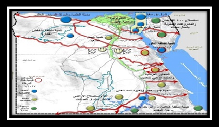

1- الجزء الاول:- المدخل الأقليمي.
1-1المقومات الطبيعية لمنطقة المثلث الذهبي.
1-1-1 الموقع الجغرافي لمحافظات المشروع
1-1-1-3 المجمعات الزراعية
يقع المشروع في الصحراء الشرقية علي مساحة تزيد علي 2.2 مليون فدان ما بين قنا وقفط وسفاجا والقصير,يضم المشروع مناطق صناعية وتعدينية وسياحية وزراعية وتجارية ,وتضم المناطق التابعة للمثلث الذهبي مناطق زراعية كبرى ,وتقوم الزاعة في المثلث الذهبي على مصادر مياه جوفية ومياه سطحية وخطوط انابيب المياه , وتتراوح مصادر المياه في المنطقة بين خطوط انابيب المياه , وخزانات المياه الجوفيه وفي الصخور , وتوجد هذه المياه الجوفيه في وادي قنا ووادي لقيطه والقصير ومنطقة النخيل غرب القصير وفي وادي عسل جنوب القصير وسفاجا.
أ- حيث ان وادي لقيطه يحتوي على 163ـ1500 م3 /اليوم في الحجر الرملي النوبي على عمق 20ـ592 متر
ب- في وادي قنا الامكانيات تتراوح بين 345 الى 3240 م3 /اليوم على عمق بين 390ـ592 متر .

ولفت الى ان النشاط الزاعي سيتم توفير المياه الصالحه للزاعه عن طريق استخدام ماكينات تعمل بالفحم لتحلية المياه الجوفيه وتحويلها لمياه عذبه صالحه لزراعة 2.7 مليون فدان بين قنا وسفاجا ومن الجانب الزراعي اكد ان الخرائط الاولى التى تم رفعها عن طريق الصور الفنيه تبلغ مساحتها 2.7 مليون فدان تقع المنطقة ما بين قنا وسفاجا لقربها من مصادر المياه هناك .
ـ زراعة 14800 فدان بالنباتات الطبية والعطرية : 1ـ من المتوقع ان تشهد منطقة المثلث استزراع نحو 14800 فدان بالنباتات الطبية والعطرية مع إقامة مجمع للصناعات الدوائية والعلاجية لتتيح نحو 5000 فرصة عمل ومن المتوقع تصدير 25 الف طن
2- تتراوح مصادر المياه في المنطقة بين خطوط (أنابيب) المياه خزانات المياه الجوفية في الصخور وتوجد هذه المياه الجوفية في وادي قنا ووادي لقيطة والقصير ومنطقة النخيل غرب القصير وفي وادي عسل جنوب القصير وسفاجا حيث أن وادي لقيطة يحتوى على163 -1500م3/اليوم في الحجر الرملي النوبي على عمق 20 – 592م وتتمثل مصادر المياه الجوفية بمنطقة الدراسة في الآبار، وقد وصل عدد الآبار بمنطقة الدراسة إلى 35 بئرعام 1997وتنوعت ما بين (آبار محفورة آلياً، حيث يبلغ عدد الآبار المحفورة آلياً 14 بئراً، وتتوزع بصورة غير منتظمة بمنطقة الدراسة فيتركز وجودها بالمنطقة الساحلية بشرق منطقة الدراسة وبخاصة في بطون أودية قويح الذي يضم 5 آبار منها وادي سفاجا ويضم 3 آبار(3 آبار بوادي فطيرة في شمال منطقة الدراسة، ووادي أم حاد جنوب غرب منطقة الدراسة ويتراوح عمق الماء بالآبار المحفورة آليا ما بين 5.1 متر بوادي سفاجا و5.92 متراً أو متدفقة بالجنوب الغربي لمنطقة الدراسة. ويتراوح العمق الكلى للآبار ما بين 5.4 متراً، و592 متراً.
آبار محفورة يدوياً ويبلغ عددها 21 بئراً، يتركز وجودها بالجانب الغربي من منطقة الدراسة ليصل عددها إلى15 بئراً بحوض وادي قنا بئرين بوادي قويح وبئرين بوادي سفاجا وبئر بوادي البارود ويتراوح عمق الماء بالآبار المحفورة يدوياً بين 2.44 متر، و6.55 متر.
3- بالنسبة للمياه السطحية فتعتبرالأمطارالمصدرالوحيد للمياه السطحية في المنطقة بعيداً عن نهر النيل.
وتمثل مصدراً من مصادرالخيرإذا أحسن حجزها وتخزينا ثم استخدامها، كما تمثل مصدراً من مصادر الخطر إذا ما أسيء استخدامها. وللاستفادة من مياه الأمطار وتلافى مخاطر السيول يجب دراسة أحواض الصرف السطحي وتتمثل أحواض التصريف في "الأودية الجافة" نظراً لما تشكله هذه الأحواض من إمكانية استقبال مياه الأمطار خاصة في زمن العواصف والتدفق المفاجئ عبر وديانها التي تحمل لمياه في مواسم الربيع والخريف.
وتشتمل منطقة الدراسة على نظامين من أحواض التصريف (نظام الصرف في البحرالأحمر و نظام الصرف في وادي النيل) يختلف نظام الصرف في البحر الأحمر عن النظام النيلي حيث يتميز بانحداره الشديد ومساحتها الصغيرة ومن الأحواض التى تنحدر تجاه البحر الأحمر من الشمال إلى الجنوب (حوض وادي البارود، حوض وادي أم تاغر، حوض وادي أبو أصالة ، حوض وادي قويح، حوض وادي العمبجى، حوض وادي جاسوس، حوض وادي سفاجا) يشتمل نظام صرف وادي النيل على تلك الأحواض أو المجاري الدنيا الواقعة غرب مناطق تقسيم المياه الرئيسية والتي تنصرف إلى نهر النيل وتتميز تلك الأحواض بمساحتها الكبيرة وبانحدارها الضعيف وباتساع عرضها, ومن أهم أحواض الصرف التي تنحدر تجاه وادي النيل (حوض وادي فطيرة، حوض وادي أبو حاد، حوض وادي القرية، حوض وادي السرى) وتتمتع المنطقة بميزة تنافسية مكانية ناتجة عن وجود محاور للتنمية تربط مناطق الظهير السكاني والزراعي بالصعيد مع المناطق الساحلية على البحر األحمر، وهما محور قنا - سفاجا بطول 464 كم وعرض 5.7 متر ومحور القصير فقط بطول 454 كم وعرض 7.5 متر.
كما يوجد بالمنطقة موانئ تعدينية متخصصة بما يسهل عملية التصدير واالستيراد المباشر للخامات والمنتجات.
يقع المثلث الذهبي في الصحراء الشرقية بين محافظتي قنا والبحر األحمر، حيث تمتد قاعدته بين سفاجا والقصير، ويقع رأسه عند محافظة قنا وبواجهة بحرية تمتد على البحر الاحمر لتوافر بطول 80 كم على مساحة 480 ألف فدان الهيئة العامة للمنطقة الا قتصادية للمثلث الذهبي والتي ستعمل كهيئة اقتصادية تتولى إدارة كافة الانشطة والموارد البشرية والطبيعية التي تقع في نطاق هذه المنطقة الحيوية، وتعمل على تنفيذ المخطط الشامل لتنمية منطقة المثلث الذهبي والذي يتضمن مشروعات في مجال السياحة والتعدين، والزراعة، والبنية األساسية، والطاقة الشمسية، والميكنة الزراعية، وحفر اآلبار، وتحلية مياه البحر وغيرها يستغرق المشروع 30 عاما لالنتهاء منه بالكامل، وفقا لما أعلن عنه وزير التجارة والصناعة، باستثمارات تصل إلى 46مليار دولار يسهم فيها القطاع الخاص بنحو 6 مليارات دولار. ويتكون من 3 محاور رئيسية، وهى محور التعدين والصناعات التعدينية من الذهب والفوسفات، ومحور الزراعة والصناعات متضمنا استصالح 30 ألف فدان، ومحور السياحة، الزراعية وسيكون لإلقليم عاصمة شرق قنا في اتجاه البحر الاحمرالتوازن المكاني، والتعامل مع منطقة المثلث الذهبي على أنها منطقة ذات طبيعة واحدة فهي تشمل ريف ( ومناطق زراعية ومناطق صناعية ومناطق سياحية، كل منها له أسلوبا مختلفا في تنميتها، مع الاخذ في الاعتبار أن هناك أنشطة قائمة بالفعل في المنطقة منذ سنوات عديدة.
1-1-2-3 المجمعات الصناعية
اولا : تعريف المجمع الصناعى هو شكل من أشكال التنظيم الاقتصادي لاقتسام السوق العالمية.
وهو النموذج الذي يهدف إلى السيطرة على فرع معين من فروع الإنتاج الصناعي، ويأتي استجابة للمتطلبات المباشرة للقوى المنتجة (التجميع)، وللظروف الخاصة للتراكم الرأس مالي (التوزيع)، فلكل مرحلة من مراحل التطور الرأس مالي الاحتكاري أشكالها في الإنتاج والتسويق والتحكم بالسلعة، بما يلائم طبيعة التطور التقني، وتنامي العلاقات الاقتصادية الدولية.
وفي أحدث هذه المراحل أصبح المجمّع الصناعي القوة الحاسمة في اقتصاد البلدان الرأسمالية وفي الاقتصاد العالمي بعد انهيار المنظومة الاشتراكية؛ حيث يضم أكبر المؤسسات وأفضلها تجهيزاً من الناحية التقنية، وقد اندمجت بشكل وحدة إنتاجية متكاملة، ينحصر دور المؤسسات الصغيرة في تزويدها بالمواد وأجزاء الإنتاج وتقديم الخدمات.
ثانيا :
نشاة المجمعات الصناعية في منتصف القرن العشرين نشأت المجمعات الصناعية نتيجة انضمام بعض المؤسسات المستقلة إلى بعضها واندماجهاً؛ أي اندماج أفقي يتخذ شكل اتحاد معامل متخصصة متماثلة في صناعة إنتاج معين، ثم تطور الاندماج ليتخذ شكلاً عمودياً، فأصبحت الشركات المتحدة تتحكم بمختلف مراحل عملية الإنتاج، ابتداءً من الحصول على مصادر المواد الأولية وتصنيع مخلفات الإنتاج حتى الدخول في مرحلة التصنيع النهائي للمنتج، أي تزايد التجميع عن طريق التكامل التصنيعي، وهذا ما أدى إلى اختفاء المؤسسات المستقلة بصورة تدريجية، ولاسيما في مجال الفولاذ والغزل والنسيج والورق والنفط. في فترة الستينات من القرن العشرين, حدثت ظاهرة انتعاش اقتصادي عالمي، أدت إلى تحفيز الاستثمارات الرأس مالية الضخمة, وبناء مصانع ومجمعات إنتاجية كبيرة، وشهدت البلدان الرأس مالية المتقدمة موجة من الاندماج في فروع اقتصادية مختلفة, أدت إلى تمركز رأس المال لدى الاحتكارات وإلى نشوء مجمعات صناعية عملاقة، ففي أمريكا مثلاً قام 200 احتكار ضخم للصناعات التحويلية في الأعوام 1956- 1963 بشراء 1080 شركة تقدر قيمتها بنحو 15مليار دولار، وفي عام 1966 بلغت قيمة الشركات المندمجة 4.1 مليار دولار، وفي عام 1968 بلغت 12.6 مليار دولار، وشملت هذه الموجة اقتصاديات ألمانيا الغربية وفرنسا وإيطاليا واليابان.
وإذا كان الاحتكار الرأس مالي يهدف إلى غزارة الإنتاج، فان استخدام التقنية المتطورة يحقق له هذه الغاية، ويدفع به نحو التمركز في الصناعات الحديثة وتكوين وحدات إنتاجية ضخمة تتجه المعامل المتخصصة فيها نحو التكامل والاندماج في مجمعات صناعية.
ثالثا:
التجمعات الصناعية المتوقعة بالمثلث الذهبى استنادا لما تضمه المنطقة من موارد معدنية ، فإنه يتوقع قيام تجمعات صناعية تقوم على الرمال البيضاء والكوارتز والسليكا ، والطفله الكاولنيه ، والرخام واحجار الزينة ، الحجر الجيرى ، وطفلة الاسمنت وصناعات الاسمنت والصناعات النادرة مثل التانتيوم والفاناديوم ومجمع صناعات الفوسفات ومجمع تكرير الذهب والصناعات التى تقوم عليه .
وعلى وجه التحديد ، فالصناعات المتوقع قيامها هى ( صناعة الزجاج والسيلكون، صناعة الرخام ومواد البناء والزينة، صناعة الحجر الجيرى والاسمنت ،الفوسفات والاسمدة الفوسفاتية ،صناعة الحراريات والطفلة البنتونية ،معالجة وتركيز المعادن الثقيلة ،تركيز وتنقية وتكرير الذهب) لهذا ، فمن المهم فى هذا المكان ان تقام جامعة خاصة بتكنولوجيا التعدين والطاقة الجديدة والمتجددة وتكنولوجيا استخدام الفحم.
المحاور الاساسيه للتطوير والتنمية فى مشروع المثلث الذهبي إلى جانب الأهداف القومية الكبرى لمشروع المثلث الذهبى ، فإنه يهدف كذلك الى تطوير عدد من الصروح والمنشآت والطرق والموانئ ومنها :
ميناء ومدينة سفاجا ، وميناء الحمراوين ، ومدينة القصير، وطريق القصير- قفط ، وإنشاء مركز إقتصادى لوجيستى شمال غرب سفاجا ، وإنشاء مناطق صناعية على طريق سفاجا - قنا.
أولاً : تطوير ميناء ومدينة سفاجا تهدف عملية تطوير ميناء سفاجا الى تحويله الى ميناء تجارى صناعى عالمى من خلال إنشاء ارصفة جديدة جنوب الميناء الحالى بأعماق مختلفة ، وتهيئة الميناء لأغراض متعددة ( صب جاف – بضائع عامة - حاويات ) ومشروعات خدمات الشحن والتفريغ والنقل البحرى إلى جانب تطوير الميناء ليصبح ميناءً تجارياً يقدم كافة التسهيلات ، وميناءً سياحياً لاستقبال اليخوت والعائمات السياحية الكبرى .
بالاضافة الى تطوير مدينة سفاجا لتعزيز مكانتها السياحية والتجارية والصناعية.
ثانياً تطوير ميناء الحمراوين الهدف من تطوير ميناء الحمراوين هو جعله ميناءً متكاملاً مع ميناء سفاجا لتجارة المواد التعدينية والحجرية والمواد الاستخراجية المصنعة .
ثالثاً تطوير مدينة القصير تهدف عملية تطوير مدينة القصير إلى جعلها مقصداً سياحيا عالميا خاصة على صعيد السياحة البيئية ، كما تهدف الى تنمية ميناء القصير بوصفه ميناءً للركاب والبضائع .
طريق القصير - قفط تقع مدينة قفط وما حولها فى نطاق مشروع المثلث الذهبى، ومن ثم تشمل عملية تطوير تلك المنطقة استحداث انشطة استخراجية للخامات التعدينية والحجرية.
إلى جانب تنمية مدينة قفط ذاتها ومنطقتها الصناعية التى تخدم ليس قفط وحدها وانما مدن الصعيد كلها.
إنشاء مركز اقتصادى لوجستى شمال غرب سفاجا من المتوقع ان يشتمل هذا المركز على عدد من الانشطة التعدينية والاستخراجية ويتكون من :
مناطق لوجستية ومراكز للمال والأعمال ومراكز تسوق تجارية ، وإسكان ادارى واسكان فندقى ، ومناطق ترفيهية مفتوحة.
إنشاء مناطق صناعية على طريق سفاجا - قنا فى منتصف الطريق تقريبا ما بين قنا وسفاجا من المتوقع قيام قلاع صناعية متنوعة ، وهناك مقترحات بإقامة منطقتين صناعيتين مساحة كل منها تزيد على المائة كيلو متر مربع .
المثلث الذهبى بوصفه منطقة جاذبة للسياحة تتنوع المقاصد السياحية بالمنطقة ومنها:
سياحة الشواطئ والغطس ، والألعاب المائية ، وسياحة السفارى ، والسياحة البيئية وخاصة تسلق الجبال وغيرها.
بالإضافة إلى هذا التنوع ، فإن منطقة المثلث تتوافر بها العديد من المزايا التى تؤهلها لأن تكون جاذبة للسياحة ، وفى مقدمة تلك المزايا سهولة الوصول إليها عبر سلسلة من الموانئ والمطارات ومنها موانئ :سفاجا ، الغردقة ، القصير ، الحمراوين ، ومطارى الغردقة ومرسى علم الدوليين يدعم ذلك وجود العديد من مراسى اليخوت فى الغردقة ، وبورت غالب ، وفى كل القرى السياحية التى تطل على البحر.
كما ترتبط المنطقة بشبكة سكك حديدية وطرق عصرية. يدعم ما سبق ، ثراء المناطق التاريخية والأثرية بمناطق الظهير الصحراوى حتى وادى النيل ومن هذه المزارات : دير الأنبا بولا ، دير الانبا انطونيوس ، ضريح العارف بالله ابو الحسن الشاذلى ، واطلال مدينة رومانية بمنطقة جبل الدخان ، وقلعة رومانية بمنطقة ابو شعرة شمال مدينة الغردقة ومعبد برانيس ، ومعبد سيتى الأول.كما تمثل المحميات الطبيعية فى محافظات قنا واسوان والبحر الأحمر أحد اهم المقومات السياحية لمنطقة المثلث ومن هذه المحميات جزر البحر الأحمر وعددها 22 جزيرة والتى تتميز بتنوع الحياة البحرية بها والعديد من الطيور النادرة ، ومحمية أبرق ، ومحمية وادى الدئيب ، ومحمية وادى علبه ، وحماطة ، وجبل شايب وغيرها.
1-2-3 تطوير الموانئ و التخطيط المستقبلي
1-1-2-3 المخطط الزمنى لتنفيذ المشروع
يتم إنشاء مشروع المثلث الذهبى بجنوب الصعيد على 6 مراحل المخطط الزمنى لكل مرحلة منه تستغرق 5 سنوات.
أشار وزير الكهرباء، إلى أنه سيكون هناك خطوط كهرباء بالمشروع بطاقة 220 ك.فولت بنهاية العام الحالي، وهو ما سيؤدي كذلك إلى المساهمة في تحسين الخدمة للمستفيدين بالمناطق المحيطة.أشار اللواء أحمد عبد الله، محافظ البحر الأحمر، إلى أن البنية الأساسية أصبحت موجودة بالمنطقة بوجه عام، موضحاً في الوقت نفسه أن المنطقة جاهزة من الآن لضخ الاستثمارات بها؛ حيث تتوافر جميع المرافق، كما يوجد بالمنطقة موانئ ومطارات، وهي إمكانات تؤهلها لبدء مشروعات التنمية بها. وضعت اللجنة المكلفة بدراسة مشروع المثلث الذهبى بصعيد مصر، مقترحاً لخطة تطوير مبدئية للطرق وخطوط السكة الحديد والموانئ البحرية، وأكدت أن شبكة الطرق والمطارات بوضعها الحالى وبخطط التوسعات المستقبلية التى تتم مرحلياً تستوعب حركة نقل وتوزيع منتجات المجمعات الصناعية المقرر إنشاؤها فى منطقة المثلث. وقالت اللجنة إنه فيما يتعلق بخط السكة الحديد «سفاجا- قنا»، فيصل طوله إلى 223 كيلو متر، وتصل أطوال المسافات المطلوب إعادة تأهيلها إلى 150 كليو متر، ومن المخطط تشغيل 6 قطارات يوميا، ويبلغ عدد العربات بكل قطار 35 عربة، تصل حمولة الواحدة 65 طنا.
وتبلغ طاقة النقل على الخط الواحد 7000 طن يومياً، يمكن استخدامها فى نقل الخامات من مناطق الإنتاج فى الوادى إلى مناطق التصنيع ونقل الفحم من الموانئ إلى مناطق التصنيع.
أما الموانئ البحرية، فإن ميناء سفاجا، سيتم إنشاء أرصفة متعددة به، سواء للحاويات أو البضائع العامة أو الصب الجاف، بطول 5 كيلو مترات على الساحل، وبطاقة إجمالية 30 مليون طن، كما يوجد ميناء أبوطرطور التعدينى، ويتم حاليا إعداد دراسة لتطوير الميناء ورفع طاقته الاستيعابية من 2.5 مليون طن صب جاف إلى 6.5 مليون طن جاف، و2 مليون طن حامض فسفوريك، ومليون طن حامض كبرتيك، و3 ملايين طن بضائع عامة، بتكلفة متوقعة 135 مليون دولار، ومدة تنفيذ 3 سنوات شاملة إجراءات الطرح.أما ميناء الحمرواين، أوصت اللجنة بإنشاء حواجز أمواج وامتداد للرصيف، ليصبح 600 متر، بدلا من 70 حاليا، والوصول بالعمق إلى 17 متراً، بدلا من 11 حالياً، وعمل التجهيزات لتداول وتخزين الفحم غرب الطريق الدولى، بمساحة 850 ألف متر مربع، مع إنشاء وصلة سكة حديد من سفاجا إلى الحمراوين. 1-2-2-3 الموانئ البحرية المقرر إنشائها لخدمة المشروع يتم إنشاء الموانئ البحرية اللازمة لتطوير وتنمية المثلث الذهبى ومنها زيادة عدد الأرصفة بميناء سفاجا البحرى" حاويات - بضائع عامة" بطول 5 كيلومتر على طول الساحل وبطاقة إجمالية 40 مليون طن وإنشاء ميناء أبو طرطور بمحطة صب جاف ومحطة صب سائل ورصيف متعدد الأغراض بطول 300 متر بإجمالي تكلفة 135 مليون دولار.
خطوات إعداد دارسة النقل البحرى
1- الوصف العام لتسهيلات التاركى والأرصفة والموانى الموجودة حالياً بالمنطقة
2- مشروعات التطوير المنتظرة بالموانئ الحالية .
3- التنبؤ بحجم ونوع ووزن البضائع المتداولة من والى منطقة الظيير المباشر والخارجى لمموانئ .
4- تحديد ميام الموانئ البحرية طبقاً النوع ووزن البضائع المنتظرة حتى عام.
5- الموانئ الإقليمية والتجارية والتعدينية المنتظر التعامل معها
6- مقترح للاجراءات العاجمة شبكة الموانئ يوجد بالإقميم موانئ عمى النيل يمكن تطويرىا كميناء أسوان النيرى بالإضافة لمموانئ البحرية كسفاجا والقصيروبرنيس.ويُعتبر ميناء سفاجا الميناء الرئيسى فى منطقة جنوب مصر، ويقع على البحر الأحمر بمدينة سفاجا عمى بُعد450 كم جنوب السويس، ويتبع ىيئة موانئ البحر الأحمر، ويتكوّن من أرصفة للبضائع العامة بطول714 متارً وعمق غاطس للمياه يتاروح بين 10،14 متارً ، ويوجد به صومعة حبوب سعة 100ألف طن، ويحتوى الميناء على محطّة ركاب، كما يوجد بو رصيف متعدّد الأ غراض بطول250 متا رً وعمق غاطس14 متار ليمكن إستخدام الميناء لخدمة حركة الركاب التى تا زيدت بعد ربطه بخط العبّاابرات إلى ميناء ضبا السعودى.
وتقدّر طاقة الميناء السنوية بثلاثة ملايين طن بضائع، فضلا عن 500ألف ا ركب، وهو مزوّد بالمساعدات الملاحية لتأمين الدخول والخروج من الميناء.
ويوجد بالميناء رصيف خاص بالألمونيوم بطول280 مٕ وعمق عشرة أمتار، كما يتم حالياً إنشاء رصيف لتصدير الفوسفات، ويوجد بالميناء ساحات تخزين عمى مساحة ألف400 مكعب ومخازن مساحتيا 4000 م مكعب .وبخلاف ميناء سفاجا، توجد فى منطقة جنوب مصر على ساحل البحر الأحمر بعض الموانئ الصغيرة فى كلٍ من الغردقة والقصير وأبو الغصون وبرنيس،هذا ويتم تطوير ميناء الغردقة للإستخدام السياحى واستقبال وخدمة اليخوت، أما ميناء القصير فيتم تطويره حالياً ليصل الرصيف بو إلى170 مترً وغاطس13 مترً مع إعداد ساحة خلفية على مساحة قدرها 35 ألف م ، وذلك للإستخدام التجارى.
مشروعات التطوير المنتظرة بالموانئ الحالية
1- ميناء سفاجا الكبير طبقا للمخطط العام الذي اعدته كلية الهندسة جامعة الأسكندرية عام 2007 يتكون هذا المخطط من العناصر الأتية:
إنشاء أرصفة متعددة ( حاويات – بضاعة عامة - متعددة الأغراض – صب جاف ) بطاول 5 كام على طول الساحل كما بالشكل و بطاقة 40 مليون طن و بما يلي إختياجات جنوب الوادى حتى عام 2050وطبقا للحاجة ولتطور أعمال التنمية الصناعية ، التعدينية ، العمرانية ،الإجتماعية بالمحور. العمالة وأوضح المهندس أسامة كمال وزير البترول الأسبق أن الدولة تستهدف تصنيع كل ما لديها من مواد خام بأيادٍ مصرية، بدلا من تصديرها للخارج وعودتها لمصر مرة أخرى فى شكل منتجات نهائية، لافتا إلى أن مشروع المثلث الذهبى يخلق أكثر من 350 ألف فرصة عمل مباشرة ومثلهم فرص غير مباشرة.
وجاء ذلك خلال مؤتمر المركز العربى الأفريقى للدراسات الاستراتيجية والبرلمانية، برئاسة السفير محمد العرابى وزير الخارجية الأسبق عضو مجلس النواب، بعنوان "مصر على طريق التنمية"، المنعقد بمدينة مرسى علم
. - ﻤرﺤﻠﺔ أوﻟﻰ إﻨﺸﺎء ﻤﺤطﺔ ﻤﺘﻌددة اﻷﻏراض داﺨـل ﻤﯿﻨـﺎء ﺴـﻔﺎﺠﺎ اﻟﻛﺒﯿـر وﺘﺘﻛـون ﻤـن رﺼﯿف ﻤﺘﻌـدد اﻷﻏراض ﺒطول٦٠٠ ﻤﺘـر وﺴﺎﺤﺎت 350 أﻟف ﻤﺘر ﻤرﺒﻊ. اﻟﺘﻛﻠﻔﺔ اﻹﺠﻤﺎﻟﯿﺔ ﻗدرﻫﺎ 75 ﻤﻠﯿون دوﻻر ﻤﻤﺎ ﯿرﻓـﻊ اﻟطﺎﻗـﺔ اﻹﺴﺘﯿﻌﺎﺒﯿﺔ ﻟﻠﻤﯿﻨﺎء ﻤن 6,37 ﻤﻠﯿون طن ﺴﻨوﯿﺎ إﻟـﻰ 10 مليون طن ﺒﻀﺎﺌﻊ ﻤﺘﻨوﻋﺔ.
اﻟـزﻤن اﻟـﻼزم ﻟﻠﺘﻨﻔﯿـذ ﺴـﻨﺔ ﻹﻋـداد ﻛراﺴـﺔ اﻟﺸروط واﻟﻤواﺼﻔﺎت واﻟطرح واﻟﺘرﺴـﯿﺔ 2 + ﺴﻨﺔ ﻟﻠﺘﻨﻔﯿذ.
٢ -ﻋﻨﺎﺼر ﺘطوﯿر ﻤﯿﻨﺎء ﺴﻔﺎﺠﺎ اﻟﺘﻌدﯿﻨﻰ )اﺒوطرطور(
ﻤـد اﻟرﺼـﯿف اﻟﺤـﺎﻟﻰ اﻟـﻰ 318 ﻤﺘـر ﻟﯿﺼـﺒﺢ طول ٥٧٨ م ﺒدﻻ ﻤن 260 م.
- إﻨﺸﺎء ﻋدد2 درﻓﯿـل ﺸـﻤﺎل وﺠﻨـوب اﻟرﺼـﯿف ﺒﻤﺴـﺎﻓﺔ ٣٥ م ﻟﯿﺼــﺒﺢ طــول ﺨــط اﻟرﺒــﺎط Berthing Line ٦٤٨ م.
إﻨﺸـﺎء 35 ﺼـوﻤﻌﺔ ﻟﻠﻐـﻼل ٣٥ ﺼـوﻤﻌﺔ × ٢٧٠٠ طن ﻗطر ٨ م وارﺘﻔﺎع ١٥ م ﺒﺈﺠﻤﺎﻟﻰ ٩٤٥٠٠ طن.
اﻨﺸﺎء ﺤظﯿرﻩ ﻟﻠﺤﯿواﻨﺎت اﻟﺤﯿﺔ ﺒﻤﺴـﺎﺤﺔ 35000 م 1- ﺘوﺴﯿﻊ ﻋرض اﻟﻤﻤر اﻟﻤﻼﺤﻰ ﻟﯿﺼﺒﺢ 260 م ﻤﻤﺎ ﯿﺘﯿﺢ ﻋﺒور ﻋدد 2 ﺴﻔﯿﻨﺔ( داﺨل وﺨﺎرج )ﻓﻰ ﻨﻔس اﻟوﻗت.
إﻨﺸﺎء ﺘﻨﻛﺎت وﻤﻌدات ﺘداول ﻟﻛﻤﯿﺔ ﻤﻠﯿون طن ﺤﺎﻤض ﻓﺴﻔورﯿك و 500,000 طن ﺤﺎﻤض ﻛﺒرﯿﺘﯿك
2- ﺘﺠﻬﯿـز ﻤﻨطﻘـﺔ ﺼـﻨﺎﻋﯿﺔ ﺒﻤﺴـﺎﺤﺔ 62,500 م 2 ﻹﻗﺎﻤـﺔ ﺼـﻨﺎﻋﺎت ﻏذاﺌﯿـﺔ – ﻤﺠـزر اﻟـﻰ – طﺤـن ﻏـﻼل – دﺒﺎﻏـﺔ ﺠﻠود
3- إﻨﺸﺎء ﻤﺠﻤوﻋﺔ ﻤﺒﺎﻨﻰ إدارﯿﺔ – طرق – ﺘﺠﻬﯿزات ﻤﯿﺎﻩ وﺼرف ﺼﺤﻰ ...... إﻟﺦ ،ﻟﯿﺼﺒﺢ اﻟﻤﯿﻨﺎء ﻗﺎدرا ﻋﻠﻰ ﺘداول: ﺘﺼدﯿر ٢،٣ ﻤﻠﯿون طن ﻓوﺴﻔﺎت (اﻟﻤطﻠوب ﺘﺼدﯿر ١،٦ ﻤﻠﯿون طن ﻓوﺴﻔﺎت ﻓﻰ ٢٠٤٥) ﺘداول ﻤﻠﯿون طن ﺤﺎﻤض ﻓﺴﻔورﯿك وﻨﺼف ﻤﻠﯿون طن ﺤﺎﻤض ﻛﺒرﯿﺘﯿك
4- إﺴ ﺘﯿراد ٣٦٧،٩٢ رأس ﻤﺎﺸﯿﺔ (اﻟﻤطﻠوب إﺴﺘﯿراد ٣٥٠،٠٠٠ رأس) 5- إﺴ ﺘﯿراد ٢،٣ ﻤﻠﯿون طن ﻗﻤﺢ (اﻟﻤطﻠوب إﺴﺘﯿراد ١،٥ ﻤﻠﯿون طن ﻗﻤﺢ ﻓﻰ ٢٠٤٥) ﻤطﺤ ن + ﻤﺼﻨﻊ دﺒﺎﻏﺔ ﺠﻠود + ﻤﺠزر اﻟﻰ + طﺤن ﻏﻼل + ﺼﻨﺎﻋﺎت ﻏذاﺌﯿﺔ. * ﻓر ص ﻋﻤل ﻤﺒﺎﺸرة ١٣٦٠ ﻋﺎﻤل.
اﻟﻤواﻨﺊ وﻤﻨطﻘﺔ اﻟﻤﺜﻠث اﻟذﻫﺒﻲ أن إﻗﺘﺼﺎدﯿﺎت اﻟﻤـواﻨﻰ ﺘﻌـد ﻓـﻰ ﺤـد ذاﺘﻬـﺎ أﺤـد أﻫـم ﻤﺤـﺎور اﻟﺘﻨﻤﯿـﺔ وﯿﻤﻛـن إﻋﺘﺒﺎرﻫـﺎ ﻨﺸـﺎط راﺌـد أو ﻗﺎﺌـد ﻟﻌﻤﻠﯿـﺔ اﻟﺘﻨﻤﯿـة ﻷى ﺼـﻨﺎﻋﺔ ﻓﻘـد ﺘـم ﺘﻛﻠﯿـف اﻹﺴﺘﺸـﺎرى ( SupplyChain ) ﻓـﻰ اﻟﻤﺤـور ﻛﻤـﺎ أﻨﻬـﺎ إﺤـدى أﻫـم ﺤﻠﻘـﺎت ﺴﻠﺴـﻠﺔ اﻹﻤـداد اﻟﺒﺤـرى ﺒﺈﻋـداد ﻫـذا اﻟﺘﻘرﯿـر ﻤـن ﺨـﻼل ﺘﺤﻠﯿـل ﺘﺴـﻬﯿﻼت اﻟﺘراﻛـﻰ واﻷرﺼـﻔﺔ واﻟﻤـواﻨﻰ اﻟﺤﺎﻟﯿـﻪ ﺒﺎﻟﻤﻨطﻘـﺔ اﻟﻤﺸـﺎر إﻟﯿﻬـﺎ ﻋﺎﻟﯿـﻪ وطﺎﻗﺘﻬـﺎ اﻹﺴـﺘﯿﻌﺎﺒﯿﺔ اﻟﺤﺎﻟﯿـﻪ واﻟﻤﻨﺘظـرة ﺒﻌد ﺘﻨﻔﯿذ ﻤﺸروﻋﺎت اﻟﺘطوﯿر اﻟﻤﻨﺘظرة وﻤﻘﺎرﻨﺘﻬﺎ ﺒﺤﺠم وﻨوع اﻟﺒﻀﺎﺌﻊ اﻟﻤﻨﺘظر ﺘداوﻟﻬﺎ ﻨﺘﯿﺠﺔ ﻟﻠﻨﻤو اﻟطﺒﯿﻌﻰ ﻟﻠﺴﻛﺎن ﺤﺘﻰ ﻋـﺎم ٢٠٣٢ ﺜـم ﻨﺘﯿﺠـﺔ ﻟﻤﺸـروﻋﺎت اﻟﺘﻨﻤﯿـﺔ اﻟﻤﺘوﻗﻌـﺔ ﺒﻌـد ﺘﻨﻔﯿـذ ﻤﺸـروﻋﺎت ﺘﻨﻤﯿـﺔ ﺒﻤﻨطﻘـﺔ اﻟﻤﺜﻠـث اﻟـذﻫﺒﻰ وذﻟـك ﻟﻠﺨـروج ﺒﻤﻘﺘرﺤﺎت ﻤﺤددة ﻟﻠﺘطوﯿر .وﻋﻠﻰ ذﻟك ﻓﻘد ﺘم ﺘﺤدﯿد ﻋﻨﺎﺼر اﻟدراﺴﺔ ﻟﺘﻛون ﻛﺎﻷﺘﻰ
ب- اﻷﺴس اﻟﺘﻰ ﺒﻨﻲ ﻋﻠﯿﻬﺎ اﻟدرﺴﺔ : -
أن ﯿﻛون اﻟﺘﺨطﯿط ﻤرﻨﺎ ﺒﺎﻟدرﺠﺔ اﻟﻛﺎﻓﯿﺔ اﻟﺘﻰ ﺘﺴﻤﺢ ﺒﺎﻟﺘﻐﯿﯿر ﻓﯿﻤﺎ ﯿﺨص ﺤﺠم وﻨوع اﻟﺒﻀﺎﺌﻊ وأﺒﻌﺎد وﻋدد اﻷرﺼﻔﺔ اﻟﻤطﻠوﺒـﺔ واﻟﻤﺴـﺎﺤﺎت اﻟﻤﺨﺼﺼـﺔ ﻟﻠﺘﺨـزﯿن واﻟطـرق واﻟﻠوﺠﺴـﺘﯿﺎت طﺒﻘـﺎ ﻟﺨطـﺔ اﻟﻌﻤـل اﻟﻤﻘدﻤـﺔ ﻤـن ﻛـل ﺼـﺎﻨﻊ دون ﻤﺸﺎﻛل رﺌﯿﺴﯿﺔ وذﻟك ﻓﻰ ﻀوء ﻋدم اﻟﺘﺤﻘق(Uncertainty) ﻤن ﺤﺠم وﻨوع اﻟﺒﻀﺎﺌﻊ اﻟﻤﺘداوﻟﻪ ﻤن وٕاﻟﻰ اﻟﻤﻨﺎطق اﻟﺼﻨﺎﻋﯿﺔ وﻤﻨﺎطق اﻟظﻬﯿر اﻟﺨﻠﻔﻰ اﻟﻤﺒﺎﺸـر واﻟﺨـﺎرﺠﻰ واﻟﻤـواد اﻟﺘﻌدﯿﻨﯿـﺔ ﻓـﻰ ﺼـورﺘﻬﺎ اﻟﺨـﺎم أو اﻟﻤـواد اﻟوﺴـﯿطﺔ أو اﻟﻤﻨﺘﺞ اﻟﻨﻬﺎﺌﻰ. - إﻤ ﻛﺎﻨﯿﺔ ﺘداول ﺠﻤﯿﻊ أﻨواع اﻟﺒﻀﺎﺌﻊ( ﺒﻀﺎﻋﺔ ﻋﺎﻤﺔ / ﺼب ﺠﺎف / ﺼب ﺴﺎﺌل )ﺒﻤﺎ ﻓﯿﻬـﺎ اﻟﺤﺎوﯿـﺎت اﻟﻤﺤﻤﻠـﺔ ﻋﻠـﻰ ﻏﯿر ﺴﻔن اﻟﺤﺎوﯿﺎت ﺒﻼ ﻗﯿود (ﻛﻤﯿﻨﺎء ﺴﻔﺎﺠﺎ اﻟﺘﻌدﯿﻨﻰ). - إﻤ ﻛﺎﻨﯿﺔ إﺴﺘﺨدام ﺴﻔن اﻟﻨﻘـل ﺒﺄﻨواﻋﻬـﺎ (ﺼـب ﺠـﺎف / ﺼـب ﺴـﺎﺌل / ﺒﻀـﺎﻋﺔ ﻋﺎﻤـﺔ / ﺴـﻔن ﺴـرﯿﻌﺔ / رورو ) ﺘﻌﻤـل ﻛﺨط ﻤﻨﺘظم (Regular Line) ﺒﻤواﻨﻰ اﻷدﺒﯿﺔ / اﻟﺴوﯿس / اﻟﺴﺨﻨﺔ / أﺒو زﻨﯿﻤﺔ / اﻟﻌﻘﺒﺔ / ﯿﻨﺒﻊ / ﻀﺒﺎ / ﺠدة / اﻟﺤدﯿدة / ﺴواﻛن / ﺒورﺴودان / ﺠﯿﺒوﺘﻰ. -ﺘﻠﺒ ﯿـﺔ إﺤﺘﯿﺎﺠـﺎت اﻟﺘـداول واﻟﺘﺨـزﯿن واﻟﻨﻘـل اﻟـداﺨﻠﻰ واﻟﺨـﺎرﺠﻰ ﻷﻨـواع اﻟﺒﻀـﺎﺌﻊ اﻟﻤﺘداوﻟـﺔ اﻟﻤﺤﺘﻤﻠـﺔ ﻤـن وٕاﻟـﻰ ﻤﻨطﻘـﺔ اﻟظﻬﯿر ﻟﺨﻠﻔﻰ اﻟﻤﺒﺎﺸر واﻟظﻬﯿر اﻟﺨﻠﻔﻰ اﻟﺒﻌﯿد.
- إﺴ ﺘﺨدام اﻹﻤﻛﺎﻨﯿﺎت اﻟﻤﺘﺎﺤﺔ ﻓﻰ اﻟﻤواﻨﻰ اﻟﻤﺤﻠﯿﺔ اﻟﻤﺤورﯿﺔ. - اﻹﺴـ ﺘﻔﺎدة ﻤـن دراﺴـﺔ ﺘطـوﯿر ﻤﯿﻨـﺎء ﺴـﻔﺎﺠﺎ اﻟﺘﻌـدﯿﻨﻰ أﺒـو طرطـور واﻟﺘـﻰ ﺘـم ﺘـدﻗﯿﻘﻬﺎ ﻤﻌرﻓـﺔ اﻟﻤﻛﺘـب اﻹﺴﺘﺸـﺎرى اﻻﻟﻤﺎﻨﻰ (HPC) ﯿوﻟﯿو ٢٠١٣ واﻟدراﺴﺔ اﻟﺨﺎﺼﺔ ﺒﺎﻟﻤﺨطط اﻟﻌﺎم ﻟﻤﯿﻨﺎء ﺴـﻔﺎﺠﺎ اﻟﻛﺒﯿـر واﻟـذى ﺘـم إﻋـدادﻫﺎ ﺒﻤﻌرﻓـﺔ ﻛﻠﯿﺔ اﻟﻬﻨدﺴﺔ ﺠﺎﻤﻌﺔ اﻹﺴﻛﻨدرﯿﺔ2007 - اﻟﺘ ﻛﺎﻤـل وﻋـدم اﻟﺘﻨـﺎﻗض ﻤـﻊ أى ﻤﺨططـﺎت ﻋﺎﻤـﺔ (Master Plans) أﻋـدﺘﻬﺎ وزارات أﺨـرى وﻋﻠـﻰ رأﺴـﻬﺎ وزارة النقل
. - ﻤوا ﺌﻤﺔ اﻟﻤﺸروﻋﺎت ﻤﻊ إﺸﺘراطﺎت اﻟﺒﯿﺌﺔ ، اﻟﺴﻼﻤﺔ ، اﻟﺼﺤﺔ اﻟﻤﻬﻨﯿﺔ واﻟﻤدوﻨﺔ اﻟدوﻟﯿﺔ ﻟﻸﻤن (ISPS). - أﻗل ﺘﻛﻠﻔﺔ إﺴﺘﺜﻤﺎرﯿﺔ وﺘﻛﻠﻔﺔ ﺘﺸﻐﯿل ﺠﺎرﯿﺔ ﻟﻠﻤرﺤﻠﺔ اﻷوﻟﻰ. - أن ﯿﺘواﻓق ﻤﻊ ﻨﺘﺎﺌﺞ وﺘوﺼﯿﺎت اﻟدر اﺴﺎت اﻟﺴﺎﺒق إﻋدادﻫﺎ ﺒﻤﻌرﻓﺔ اﻟﺒﻨك اﻟدوﻟﻰ (ﻤﺎﯿو٢٠١٢ )ﺒﺸـﺄن ﺤﺎﺠـﺔ ﻤﺼـر اﻟﻤﺎﺴﺔ ﻟﻤﺤطﺎت إﻀﺎﻓﯿﺔ ﻟﻠﺼب اﻟﺠﺎف واﻟﺒﻀﺎﻋﺔ اﻟﻌﺎﻤﺔ إﻋﺘﺒﺎرا ﻤن ﻋﺎم 2016 وﻛذا ﻨﺘـﺎﺌﺞ وﺘوﺼـﯿﺎت دراﺴـﺎت اﻟﺠﺎﯿﻛﺎ ﺒﺸﺄن إﻋﺎدة ﺘوطﯿن اﻟزﯿﺎدة اﻟﺴﻛﺎﻨﯿﺔ اﻹﻀﺎﻓﯿﺔ واﻟﺘﻰ ﺴﺘﺼل إﻟﻰ 50 ﻤﻠﯿون ﻨﺴﻤﺔ ﻓﻰ ﻋﺎم٢٠٥٢ - اﻹ ﺴﺘﻔﺎدة ﻤن دراﺴﺔ ﺘطوﯿر ﻤﯿﻨﺎء ﺴﻔﺎﺠﺎ اﻟﺘﻌدﯿﻨﻰ (أﺒو طرطور)واﻟﺘﻰ ﺘم ﺘدﻗﯿﻘﻬﺎ ﺒﻤﻌرﻓﺔ اﻟﻤﻛﺘب اﻹﺴﺘﺸﺎرى.
- رﺒـط اﻟﻤﻨـﺎطق اﻟﺼـﻨﺎﻋﯿﺔ اﻟﻤﻨﺘظـر إﻗﺎﻤﺘﻬـﺎ ﺒﺎﻟﻤﻨطﻘـﺔ ﺒﺒـﺎﻗﻰ اﻟﻤـواﻨﻰ اﻟﺘﻌدﯿﻨﯿـﺔ ﻟﺘﺴـﻬﯿل ﺘﺒـﺎدل اﻟﻤـواد اﻟﺨـﺎم واﻟﻤﺼـﻨﻌﺔ وذﻟك ﺘﺤﻘﯿﻘﺎ ﻟﻤﺘطﻠﺒﺎت اﻟوﺼول اﻟﻤوﻗوت (Just in Time ) و اﻟﻤﺴﺘﻤر ﻟﻠﺒﻀﺎﺌﻊ واﻟﻐﯿر ﻤﺘﻘطﻊ وﺒﻤﺎ ﯿﺤﻘق ﺘﻘﻠﯿل ﺘﻛﻠﻔﺔ اﻟﺘﺨزﯿن واﻟﻨﻘل (إﺤدى أﺴﺒﺎب زﯿﺎدة اﻟﺘﻛﻠﻔﺔ اﻟﻠوﺠﯿﺴﺘﯿﺔ).